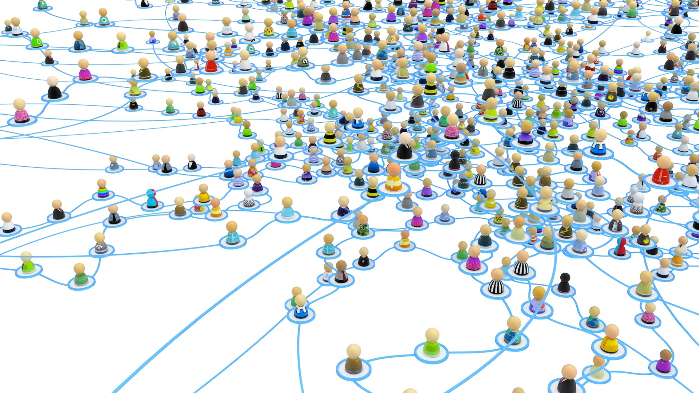

<mat-sidenav-container>
  <mat-sidenav #sidenav mode="side">
    <app-filter></app-filter>
  </mat-sidenav>

  <mat-sidenav-content>
    <!-- <div id="imgCarousel" class="carousel slide" data-ride="carousel">
      <div class="carousel-inner">
        <div class="carousel-item active">
          
        </div>
        <div class="carousel-item">
          
        </div>
        <div class="carousel-item">
          
        </div>
      </div>
    </div> -->
    <button mat-raised-button color="primary" (click)="sidenav.toggle()" id="toggleButton">
      <div *ngIf="!sidenav.opened">
        <i class="fas fa-chevron-right fa-lg"></i>
      </div>
      <div *ngIf="sidenav.opened">
        <i class="fas fa-chevron-left fa-lg"></i>
      </div>
    </button>
  </mat-sidenav-content>
</mat-sidenav-container>